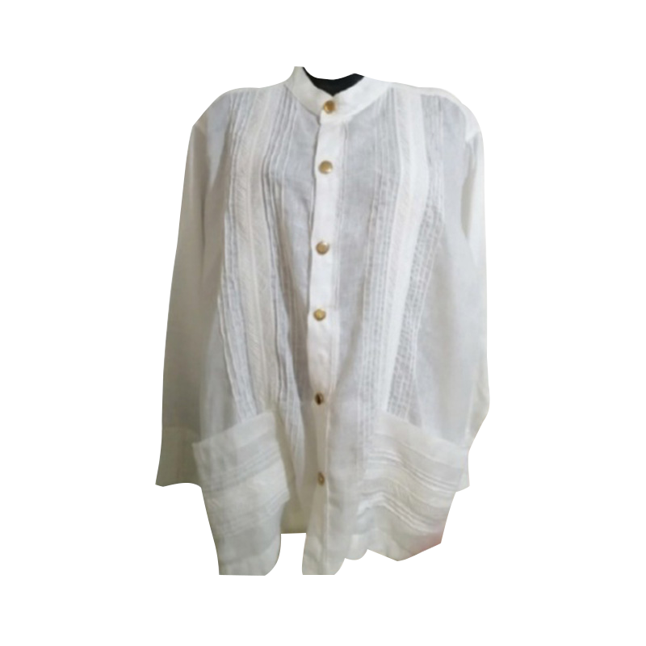
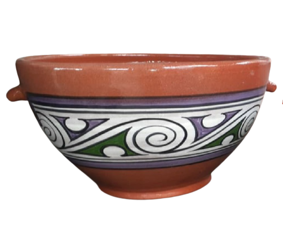
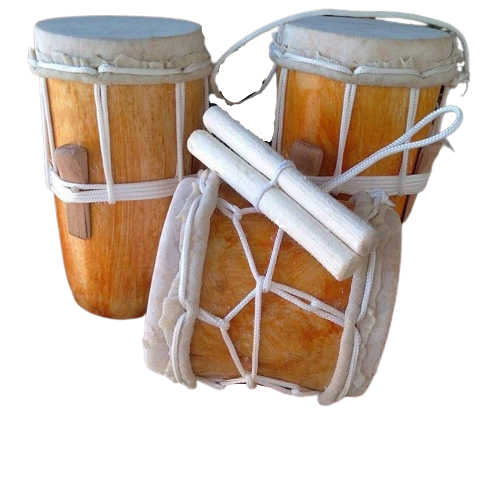
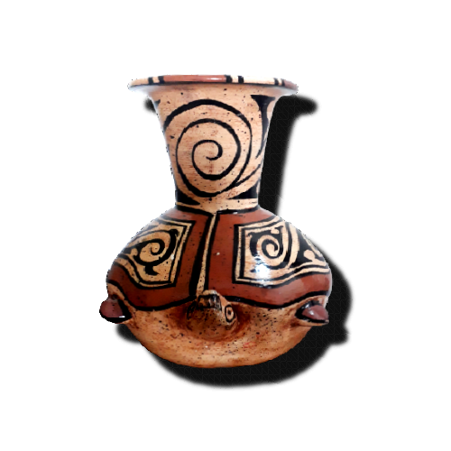

En cuanto a las artesanías, grupos de mujeres de San José, Los Llanos, Rincón Santo, Cerro Largo, Llano Grande, Menchaca son las encargadas.
Con mucha delicadeza y profesionalismo, confeccionan polleras ocueñas de gala, de matrimonio, montunas, trajes estilizados con labores policromas al gusto del comprador
el famoso montuno con sus labores de punto en cruz, con sus llamativos colores rojo, azul y amarillo quemado.
No podemos dejar de mencionar la famosa camisilla ocueña, cuyo componente era un juego de alforzas, pequeños talcos piramidales en relieve, a todo lo largo del borde que limitaba los juegos de alforzas con sus labores de talco simétricamente confeccionadas al gusto del comprador.


Camisilla

Jarrón

Sombrero pinta'o

Tambor de madera
